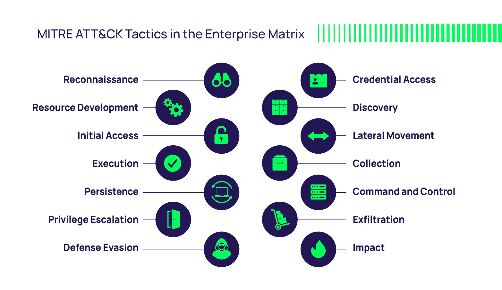

Malware (malicious software) là phần mềm độc hại được thiết kế để xâm nhập, gây hại hoặc đánh cắp thông tin từ hệ thống máy tính. Các loại malware phổ biến bao gồm virus, trojan, ransomware và rootkit. Phân tích malware (malware analysis) là quá trình nghiên cứu hành vi, chức năng của mã độc nhằm tìm ra cách phòng chống và khắc phục hậu quả.
Một trong những tài liệu kinh điển về chủ đề này là Practical Malware Analysis của Michael Sikorski và Andrew Honig. Cuốn sách cung cấp kiến thức từ cơ bản đến nâng cao về phân tích tĩnh và động, giúp người đọc hiểu cách reverse engineering malware, sử dụng các công cụ như IDA Pro, OllyDbg và xử lý mã độc trong môi trường an toàn. Đây là tài liệu không thể thiếu cho những ai muốn tìm hiểu về malware analysis một cách thực tiễn.
Mình cũng có note lại một vài điểm quan trọng từ cuốn sách này trong
series này.
Bước đầu, mình sẽ sử dụng một số tool như dưới đây để phân tích malware
trên Windows:
- PEiD: Phần mềm dùng để detect packer của file exe.
- Detect It Easy: Dùng để detect packer, compiler, thông tin
file exe,... (best).
- Resource Hacker: Dùng để extract
resource từ file exe.
- Dependency Walker: Dùng để xem các
DLL mà file exe sử dụng.
- ...
Ở bước đầu này bạn đọc cũng cần phải nắm chắc kiến thức về Windows. Bạn đọc có thể xem lại ở bài viết trước.
Một cách nhanh chóng để thực hiện dynamic analysis là ném mẫu malware lên malware sandbox. Một số dịch vụ sandbox phổ biến như Hybrid Analysis, Any.Run, Joe Sandbox,...
Các nền tảng này thường là trả phí, phân tích malware tương tác cho phép chạy và quan sát hành vi của mã độc trong môi trường sandbox. Các công cụ này cung cấp phân tích thời gian thực với giao diện trực quan, hỗ trợ theo dõi quá trình, mạng, registry và file system, giúp phát hiện và điều tra malware nhanh chóng.
Đặc biệt các report trả về sẽ được đối chiếu theo framework ATT&CK Matrix. Framework này được MITRE phát triển để mô tả các kỹ thuật và chiến thuật mà kẻ tấn công sử dụng trong suốt vòng đời của một cuộc tấn công mạng.
